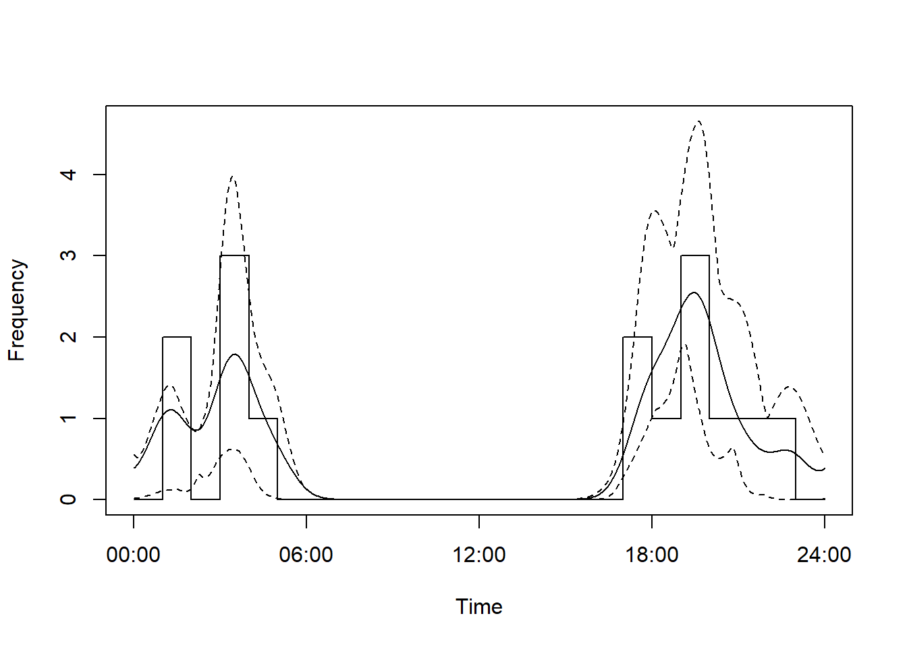
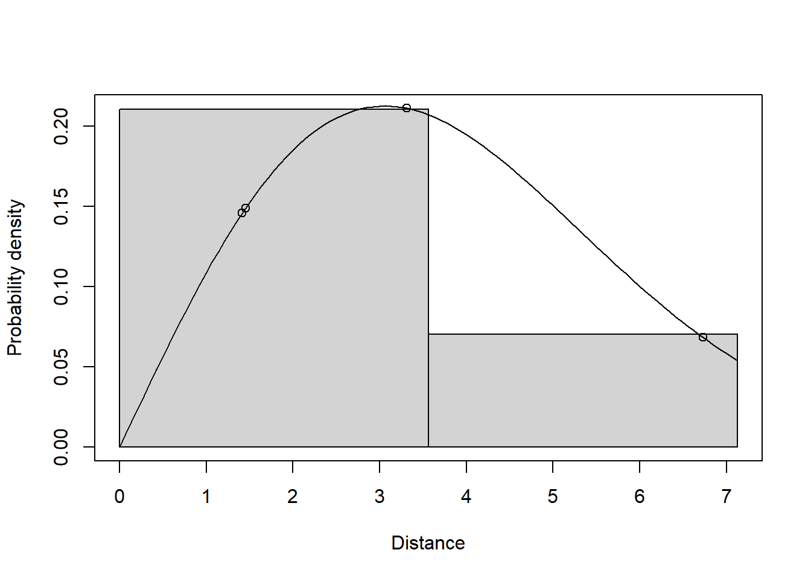
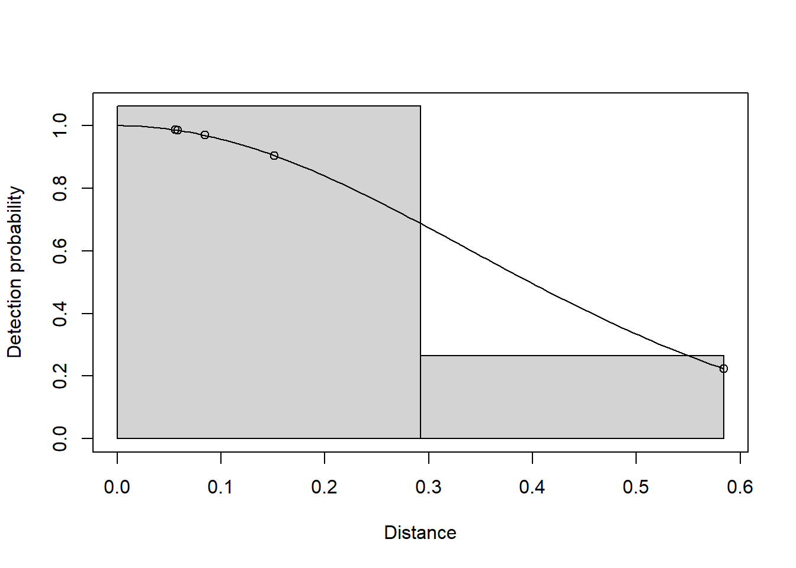

install.packages(c("devtools", "tidyverse"))
pak::pak("inbo/camtraptor")
pak::pak("MarcusRowcliffe/camtrapDensity")camtrapDensity
This vignette demonstrates usage of camtrapDensity, a development R package designed to interface seamlessly with camtrapDP datapackages generated in Agouti. The package currently provides functions to run single species random encounter models to estimate animal density, including models for the component parameters (speed, activity level and detection zone dimensions). There is also some basic functionality to check and correct the data.
Getting started with RStudio
If you don’t already have them, install R and RStudio.
Run analyses within an RStudio project. To set up a new project in RStudio in either a new or an existing project directory, use menu options:
File > New Project > New OR Existing Directory > Browse > select directory > Open > Create Project
This creates a file with extension .Rproj in the directory you chose or created. By default, the last project you opened will re-open next time you run RStudio. You can open a different project by double clicking the relevant .Rproj file in your file browser, or by navigating to it from the RStudio menu:
File > Open Project
or
File > Recent Projects
To start running analyses, open a new R script file:
File > New File > R Script
You can now add lines of code to the script window from the examples below, edit them as necessary to fit your own case, and run them to perform the analysis. To run code, move your cursor to the line you want to run, or highlight multiple lines, and press Ctrl+Enter (Windows) or Cmd+Enter (Mac), or click Run at the top of the code pane.
Installing packages
Install camtrapDensity, camptraptor and the other necessary supporting packages by running this code. You only need to run this code once for the initial install, although it may be necessary to re-install packages when important updates are released from time to time:
Example usage
Load the required packages at the beginning of each session (each time you close and restart):
library(camtraptor)
library(camtrapDensity)
library(lubridate)Loading data
Having annotated your images in Agouti (including marking animal positions and deployment calibration poles):
- download the data from Agouti;
- open R Studio and create a new project (see above);
- unzip the Agouti download within your project directory.
This allows you to access multiple datapackages from a single project. Alternatively you can create a new project for each datapackage by reversing steps 2 and 3 above (unzip the data download first, then create a new project in the resulting directory). To load data, use the relevant platform- and case-specific code below (replacing the path before /datapackage.json with your local directories):
# Data are in the project directory
pkg <- read_camtrapDP("datapackage.json")
# Data are in a subdirectory of the project directory
pkg <- read_camtrapDP("your_local_directory/datapackage.json")
# Data are outside the project directory (requires full path)
pkg <- read_camtrapDP("C:/path/to/your/folder/datapackage.json") # WindowsChecking the deployment schedule
This line provides an interactive visualisation of the deployment schedules. It can quickly highlight any incorrect dates, or help you decide where to split the data if you only want to analyse a subset of the deployments. Black lines indicate the period of operation of each deployment and orange bars indicate the time at which each observation occurred.
plot_deployment_schedule(pkg)Mapping deployments
You can create a map of deployments using this code:
map_deployments(pkg)You can plot the same map but with point diameter proportional to deployment-specific trap rate for a given species like this (use scientific names):
map_traprates(pkg, species="Vulpes vulpes")Subsetting deployments
Use this function if you want to analyse only a subset of deployments. Commonly useful if your data contains multiple survey seasons and you need to extract one of them for analysis, selecting deployments by date. You can also select or exclude deployments or locations by name. Here are some examples (note that these create a new data object called subpkg):
# Keep only deployments starting after a given date
subpkg <- subset_deployments(pkg, start > ymd("2017-10-09"))
# Keep only deployments ending before a given date
subpkg <- subset_deployments(pkg, end < ymd("2017-10-23"))
# Keep only deployments occurring between given dates
subpkg <- subset_deployments(pkg,
start > ymd("2017-10-09") &
end < ymd("2017-10-23") )
# Keep only deployments at a given set of locations
subpkg <- subset_deployments(pkg, locationName %in% c("S01", "S02"))
# Keep all deployments except those at a given set of locations
subpkg <- subset_deployments(pkg, !locationName %in% c("S01", "S02"))
# Keep all deployments except those at a given location
subpkg <- subset_deployments(pkg, locationName != "S01")After subsetting, check your sub-package to verify correct selection, as above.
Time-slicing deployments
Use this function to take a time slice of the data. Observations outside start and/or end times are discarded, and deployment start and/or end times are rest to those times if they fall outside the slice. Optionally, you can restrict the slicing to a subset of deployments, selected on the basis of information in the deployments table. Here are some examples:
# Slices all deployments to the interval between 9 Oct and 26 Oct mid-day
subpkg <- slice_camtrap_dp(pkg,
start = "2017/10/09 12:00:00",
end = "2017/10/26 12:00:00")
# Slices just the deployment at location S02 to finish on 27 Oct mid-day
subpkg <- slice_camtrap_dp(pkg,
end = "2017/10/27 12:00:00",
depChoice = locationName=="S02")Correcting timestamps
Sometimes a camera is deployed with date-time set incorrectly. In this case you can correct all the times for this deployment by running the following, with arguments identifying the datapackage (pkg), the deployment to correct (depID), and reference times indicating the amount by which the times are out (wrongTime and rightTime). The next example represents a scenario where the camera spontaneously reset to an arbitrary date-time at the start of a deployment, but it is known when this reset happened (for example rightTime taken from the correct time on the image of an info board at set up, and wrongTime taken from the info strip added by the camera to this image):
pkg_corrected <- correct_time(pkg,
depID = "c95a566f-e75e-4e7b-a905-0479c8770da3",
wrongTime = "1970-01-01 00:05:00",
rightTime = "2023-10-10 14:23:00")To find the long deployment ID, you can view the deployment data table and copy the relevant value from the deploymentID column:
View(pkg$data$deployments)Alternatively, you can change date-times by location name (remembering that a location can include more than one deployment). Also, if you know the time offset required and don’t need to take it from a reference image on a particular date, (for example, you know that when setting the camera the wrong time zone was used, or there was an AM/PM mix up), you can supply times with the desired time offset but an arbitrary date-time. For example, this adds 12 hours to all the timestamps from location S01:
pkg_corrected <- correct_time(pkg,
locName = "S01",
wrongTime = "2000-01-01 00:00:00",
rightTime = "2000-01-01 12:00:00")Both examples create a new datapackage object called pkg_corrected.
Checking deployment calibration models
Run the next chunk to show diagnostic plots for the deployment calibration models used to generate animal position and speed data (replacing pkg with the name of a subsetted and/or time-corrected package if necessary). Then follow the interactive instructions to accept or reject each calibration model. See the document “Interpreting deployment model diagnostic plots” for guidance on how to decide, available here.
pkg_chk <- check_deployment_models(pkg)The datapackage called pkg_chk will now keep a record of which deployments have been rejected, and position and speed data from these deployments will be excluded from subsequent analysis, since we expect them to be unreliable.
Estimating REM density
Density estimation can be run as a single step, most simply like this:
res <- rem_estimate(pkg)This will prompt you to choose which species to analyse, and run deployment calibration model checks as above. The next line of code is an alternative example that runs the analysis on a datapackage that has already had its deployment calibration models checked (pkg_chk) and switches off calibration model checking (check_deployments=FALSE), avoiding having to do this each time you analyse a different species; it also specifies a species (species = "Vulpes vulpes"), rather than using interactive selection; and it reduces the number of replications used to generate standard errors (reps = 10 - this can be useful to speed things up for exploration, but should be left out when generating final results):
res_vul <- rem_estimate(pkg_chk,
check_deployments = FALSE,
species = "Vulpes vulpes",
reps = 10)Alternatively, one or more REM component models can be fitted separately before the density estimation step, allowing more flexibility in model choices. In this example all four models (detection radius, detection angle, speed while active and activity level) are fitted first, with species pre-defined. Species can be chosen either interactively:
sp <- select_species(pkg_chk)or specified directly:
sp <- "Vulpes vulpes"Then model fitting might look like this:
smod <- fit_speedmodel(pkg_chk, species=sp)
pmod <- fit_actmodel(pkg_chk, reps=100, species=sp)
rmod <- fit_detmodel(radius~1, pkg_chk, order=0, species=sp, truncation=6)
amod <- fit_detmodel(angle~1, pkg_chk, order=0, unit="radian", species=sp)
res_vul <- rem_estimate(pkg_chk, check_deployments=F, species=sp,
radius_model = rmod,
angle_model = amod,
speed_model = smod,
activity_model = pmod)Understanding the output
The output of rem_estimate is a list with components:
estimates: the density estimate and component parameters with their errorsspecies: the species to which the estimates applydata: the trap rate data in the form of a table with counts and camera effort for each locationradius_model,angle_model,speed_model,activity_model: the model objects from which parameter estimates were derived.
You can inspect these list components individually by attaching the compenent name to the result object spearated with a $ sign, like this:
res_vul$estimates estimate se cv lcl95 ucl95 n
radius 4.1783732 0.88573571 0.2119810 2.4423312 5.9144152 4
angle 44.4312270 11.28197392 0.2539199 22.3185581 66.5438959 5
active_speed 3.0792649 0.76463024 0.2483158 1.5805896 4.5779401 4
activity_level 0.2451959 0.03668991 0.1496351 0.1732837 0.3171081 15
overall_speed 18.1205531 5.25344249 0.2899162 7.8238058 28.4173004 NA
trap_rate 0.3535279 0.04529400 0.1281200 0.2510017 0.3900774 3
density 5.2851597 2.04990211 0.3878600 2.5375110 11.0079972 NA
unit
radius m
angle degree
active_speed km/hour
activity_level none
overall_speed km/day
trap_rate n/day
density n/km2This table provides the core results. Rows radius and angle are the effective detection radius and angle respectively. The active_speed row refers to the estimated speed while active. activity_level is the estimated proportion of time spent active. The overall_speed row refers to the product of active_speed and activity_level, giving the overall average speed, or day range. The trap_rate row is the number of animal observations per unit time. density is the estimated number of animals per unit area. Columns contain the estimates, their standard errors (se), coefficients of variation (cv - se as a proportion of the estimate), lower and upper 95% confidence intervals (lcl95 and ucl95), sample sizes (n), and units. Sample size are the numbers of observations available for estimation, except for trap rate, where n is the number of locations.
Inspecting the trap rate data shows the number of observations available at each location (n), the amounts of camera effort and its unit, and the species to which this applies:
res_vul$data# A tibble: 3 × 7
locationName latitude longitude n effort effort_unit scientificName
<chr> <dbl> <dbl> <int> <dbl> <chr> <chr>
1 S01 51.5 -0.150 3 10.0 day Vulpes vulpes
2 S02 51.5 -0.154 2 4.55 day Vulpes vulpes
3 S03 51.5 -0.150 10 19.4 day Vulpes vulpes To save a results table to an external file, run this (a file named as indicated will be created in your project directory):
write.csv(res_vul$estimates, "vulpes_REM_results.csv")You can also use this convenience function to save results with additional information about the species and project, including the option to save a single data table of results for multiple species:
write_rem_csv(res_vul, res_cer, res_cap)Here, three objects are provided separated by commas, but it could be any number. Each should be an object created as output from a call to rem_estimate.
Component model fits can be evaluated by inspecting diagnostic plots:
plot(res_vul$activity_model)
plot(res_vul$radius_model, pdf=TRUE)
plot(res_vul$angle_model)
General R tips
Once you have fitted one or more REM models in a session, you may want to save your progress so that you don’t have to run again everything next session. To do this, save your workspace image when you exit RStudio. By default, RStudio should prompt you to do this on exit, and automatically reload your work next time you open the project. However, you can save your workspace manually, either using the RStudio menu:
Session > Save Workspace As > provide a file name > Save
or by running one of these lines:
save.image() # Creates a file named .RData in the project directory
save.image("12Feb24.RData") # Creates a file named 12Feb24.RDataAt the start of the next session, if you want to load a specific workspace, you can either use the menu:
Session > Load Workspace > select the required RData file > Open
or run this line, replacing the text with your file name:
load("12Feb24.RData")To get help on any function, including details on all the argument options, run the function name preceded by a question mark, e.g.
?rem_estimate